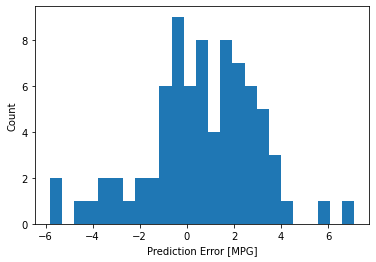

Predicción de la eficiencia de combustible usando regresión con Early Stopping¶
30 min | Última modificación: Abril 7, 2020
Adaptado de https://www.tensorflow.org/beta/tutorials/keras/basic_regression
Importación de librerías¶
[1]:
import pathlib
import numpy as np
import pandas as pd
import seaborn as sns
import matplotlib.pyplot as plt
%matplotlib inline
import tensorflow as tf
from tensorflow import keras
# from tensorflow.keras import layers
print(tf.__version__)
#
# Establece el nivel de reporte en
# pantalla de TensorFlow
#
import logging
logger = tf.get_logger().setLevel(logging.ERROR)
2.1.0
[2]:
#
# Librerias adicionales
#
import tensorflow_docs as tfdocs
import tensorflow_docs.plots
import tensorflow_docs.modeling
Carga y configuración del dataset¶
[3]:
dataset_path = keras.utils.get_file(
"auto-mpg.data",
"http://archive.ics.uci.edu/ml/machine-learning-databases/auto-mpg/auto-mpg.data",
)
dataset_path
[3]:
'/root/.keras/datasets/auto-mpg.data'
[4]:
column_names = [
"MPG",
"Cylinders",
"Displacement",
"Horsepower",
"Weight",
"Acceleration",
"Model Year",
"Origin",
]
raw_dataset = pd.read_csv(
dataset_path,
names=column_names,
na_values="?",
comment="\t",
sep=" ",
skipinitialspace=True,
)
dataset = raw_dataset.copy()
dataset.tail()
[4]:
| MPG | Cylinders | Displacement | Horsepower | Weight | Acceleration | Model Year | Origin | |
|---|---|---|---|---|---|---|---|---|
| 393 | 27.0 | 4 | 140.0 | 86.0 | 2790.0 | 15.6 | 82 | 1 |
| 394 | 44.0 | 4 | 97.0 | 52.0 | 2130.0 | 24.6 | 82 | 2 |
| 395 | 32.0 | 4 | 135.0 | 84.0 | 2295.0 | 11.6 | 82 | 1 |
| 396 | 28.0 | 4 | 120.0 | 79.0 | 2625.0 | 18.6 | 82 | 1 |
| 397 | 31.0 | 4 | 119.0 | 82.0 | 2720.0 | 19.4 | 82 | 1 |
[5]:
dataset.info()
<class 'pandas.core.frame.DataFrame'>
RangeIndex: 398 entries, 0 to 397
Data columns (total 8 columns):
# Column Non-Null Count Dtype
--- ------ -------------- -----
0 MPG 398 non-null float64
1 Cylinders 398 non-null int64
2 Displacement 398 non-null float64
3 Horsepower 392 non-null float64
4 Weight 398 non-null float64
5 Acceleration 398 non-null float64
6 Model Year 398 non-null int64
7 Origin 398 non-null int64
dtypes: float64(5), int64(3)
memory usage: 25.0 KB
Exploración del dataset¶
[6]:
#
# Datos NA
#
dataset.isna().sum()
[6]:
MPG 0
Cylinders 0
Displacement 0
Horsepower 6
Weight 0
Acceleration 0
Model Year 0
Origin 0
dtype: int64
[7]:
#
# Elimina los registros con NA
#
dataset = dataset.dropna()
[8]:
#
# One-hot encoding
#
dataset["Origin"] = dataset["Origin"].map({1: "USA", 2: "Europe", 3: "Japan"})
dataset.tail()
[8]:
| MPG | Cylinders | Displacement | Horsepower | Weight | Acceleration | Model Year | Origin | |
|---|---|---|---|---|---|---|---|---|
| 393 | 27.0 | 4 | 140.0 | 86.0 | 2790.0 | 15.6 | 82 | USA |
| 394 | 44.0 | 4 | 97.0 | 52.0 | 2130.0 | 24.6 | 82 | Europe |
| 395 | 32.0 | 4 | 135.0 | 84.0 | 2295.0 | 11.6 | 82 | USA |
| 396 | 28.0 | 4 | 120.0 | 79.0 | 2625.0 | 18.6 | 82 | USA |
| 397 | 31.0 | 4 | 119.0 | 82.0 | 2720.0 | 19.4 | 82 | USA |
[9]:
#
# Genera variables dummy para las columnas alfanuméricas.
# Note que la columna Origin se remueve del dataset
#
dataset = pd.get_dummies(dataset, prefix='', prefix_sep='')
dataset.tail()
[9]:
| MPG | Cylinders | Displacement | Horsepower | Weight | Acceleration | Model Year | Europe | Japan | USA | |
|---|---|---|---|---|---|---|---|---|---|---|
| 393 | 27.0 | 4 | 140.0 | 86.0 | 2790.0 | 15.6 | 82 | 0 | 0 | 1 |
| 394 | 44.0 | 4 | 97.0 | 52.0 | 2130.0 | 24.6 | 82 | 1 | 0 | 0 |
| 395 | 32.0 | 4 | 135.0 | 84.0 | 2295.0 | 11.6 | 82 | 0 | 0 | 1 |
| 396 | 28.0 | 4 | 120.0 | 79.0 | 2625.0 | 18.6 | 82 | 0 | 0 | 1 |
| 397 | 31.0 | 4 | 119.0 | 82.0 | 2720.0 | 19.4 | 82 | 0 | 0 | 1 |
Conjuntos de entrenamiento y prueba¶
[10]:
#
# El uso de esta función es más simple que el uso de
# train_test_split
#
train_dataset = dataset.sample(frac=0.8, random_state=0)
test_dataset = dataset.drop(train_dataset.index)
Inspección de los datos¶
[11]:
sns.pairplot(
train_dataset[["MPG", "Cylinders", "Displacement", "Weight"]], diag_kind="kde"
)
[11]:
<seaborn.axisgrid.PairGrid at 0x7f508cb439e8>

[13]:
#
# Estadísticos
#
train_stats = train_dataset.describe()
train_stats.pop("MPG")
train_stats = train_stats.transpose()
train_stats
[13]:
| count | mean | std | min | 25% | 50% | 75% | max | |
|---|---|---|---|---|---|---|---|---|
| Cylinders | 314.0 | 5.477707 | 1.699788 | 3.0 | 4.00 | 4.0 | 8.00 | 8.0 |
| Displacement | 314.0 | 195.318471 | 104.331589 | 68.0 | 105.50 | 151.0 | 265.75 | 455.0 |
| Horsepower | 314.0 | 104.869427 | 38.096214 | 46.0 | 76.25 | 94.5 | 128.00 | 225.0 |
| Weight | 314.0 | 2990.251592 | 843.898596 | 1649.0 | 2256.50 | 2822.5 | 3608.00 | 5140.0 |
| Acceleration | 314.0 | 15.559236 | 2.789230 | 8.0 | 13.80 | 15.5 | 17.20 | 24.8 |
| Model Year | 314.0 | 75.898089 | 3.675642 | 70.0 | 73.00 | 76.0 | 79.00 | 82.0 |
| Europe | 314.0 | 0.178344 | 0.383413 | 0.0 | 0.00 | 0.0 | 0.00 | 1.0 |
| Japan | 314.0 | 0.197452 | 0.398712 | 0.0 | 0.00 | 0.0 | 0.00 | 1.0 |
| USA | 314.0 | 0.624204 | 0.485101 | 0.0 | 0.00 | 1.0 | 1.00 | 1.0 |
[14]:
#
# Extracción de la variable dependiente
#
train_labels = train_dataset.pop('MPG')
test_labels = test_dataset.pop('MPG')
Normalización de los datos¶
[15]:
def norm(x):
return (x - train_stats['mean']) / train_stats['std']
normed_train_data = norm(train_dataset)
normed_test_data = norm(test_dataset)
Construcción del modelo¶
[17]:
def build_model():
model = keras.Sequential(
[
keras.layers.Dense(
64, activation=tf.nn.relu, input_shape=[len(train_dataset.keys())]
),
keras.layers.Dense(64, activation=tf.nn.relu),
keras.layers.Dense(1),
]
)
optimizer = tf.keras.optimizers.RMSprop(0.001)
model.compile(
loss="mean_squared_error",
optimizer=optimizer,
metrics=["mae", "mse"],
)
return model
model = build_model()
model.summary()
Model: "sequential"
_________________________________________________________________
Layer (type) Output Shape Param #
=================================================================
dense (Dense) (None, 64) 640
_________________________________________________________________
dense_1 (Dense) (None, 64) 4160
_________________________________________________________________
dense_2 (Dense) (None, 1) 65
=================================================================
Total params: 4,865
Trainable params: 4,865
Non-trainable params: 0
_________________________________________________________________
Predicción con el modelo sin entrenar¶
[18]:
example_batch = normed_train_data[:10]
example_result = model.predict(example_batch)
example_result
[18]:
array([[ 0.04203197],
[ 0.02802999],
[ 0.27785492],
[ 0.15514171],
[-0.1699171 ],
[ 0.07736417],
[-0.19498652],
[-0.13980073],
[ 0.09424061],
[-0.4614967 ]], dtype=float32)
Entrenamiento¶
[19]:
EPOCHS = 1000
history = model.fit(
normed_train_data,
train_labels,
epochs=EPOCHS,
validation_split=0.2,
verbose=0,
callbacks=[tfdocs.modeling.EpochDots()],
)
Epoch: 0, loss:564.8484, mae:22.4619, mse:564.8484, val_loss:557.8008, val_mae:22.2546, val_mse:557.8008,
....................................................................................................
Epoch: 100, loss:6.2236, mae:1.7566, mse:6.2236, val_loss:8.6116, val_mae:2.2222, val_mse:8.6116,
....................................................................................................
Epoch: 200, loss:5.2143, mae:1.6022, mse:5.2143, val_loss:8.4110, val_mae:2.2212, val_mse:8.4110,
....................................................................................................
Epoch: 300, loss:4.7649, mae:1.5034, mse:4.7649, val_loss:8.2982, val_mae:2.2220, val_mse:8.2982,
....................................................................................................
Epoch: 400, loss:4.2644, mae:1.4142, mse:4.2644, val_loss:8.4544, val_mae:2.2242, val_mse:8.4544,
....................................................................................................
Epoch: 500, loss:3.7022, mae:1.3010, mse:3.7022, val_loss:8.9437, val_mae:2.3084, val_mse:8.9437,
....................................................................................................
Epoch: 600, loss:3.6042, mae:1.2449, mse:3.6042, val_loss:8.6599, val_mae:2.2060, val_mse:8.6599,
....................................................................................................
Epoch: 700, loss:3.1659, mae:1.1820, mse:3.1659, val_loss:8.7814, val_mae:2.2207, val_mse:8.7814,
....................................................................................................
Epoch: 800, loss:2.7468, mae:1.0697, mse:2.7468, val_loss:7.9585, val_mae:2.1374, val_mse:7.9585,
....................................................................................................
Epoch: 900, loss:2.5869, mae:1.0708, mse:2.5869, val_loss:7.7441, val_mae:2.0598, val_mse:7.7441,
....................................................................................................
[20]:
hist = pd.DataFrame(history.history)
hist['epoch'] = history.epoch
hist.tail()
[20]:
| loss | mae | mse | val_loss | val_mae | val_mse | epoch | |
|---|---|---|---|---|---|---|---|
| 995 | 2.402189 | 1.022533 | 2.402189 | 7.786156 | 2.116024 | 7.786156 | 995 |
| 996 | 2.501031 | 1.045236 | 2.501030 | 8.048581 | 2.122364 | 8.048581 | 996 |
| 997 | 2.480807 | 1.036803 | 2.480807 | 7.626246 | 2.092448 | 7.626246 | 997 |
| 998 | 2.408323 | 0.998709 | 2.408323 | 8.089802 | 2.072443 | 8.089802 | 998 |
| 999 | 2.359191 | 1.021146 | 2.359191 | 8.584952 | 2.192971 | 8.584951 | 999 |
Visualización de la evolución del error durante el entrenamiento¶
[21]:
plotter = tfdocs.plots.HistoryPlotter(smoothing_std=2)
plotter.plot({'Basic': history}, metric = "mae")
plt.ylim([0, 10])
plt.ylabel('MAE [MPG]')
[21]:
Text(0, 0.5, 'MAE [MPG]')

[22]:
plotter.plot({'Basic': history}, metric = "mse")
plt.ylim([0, 20])
plt.ylabel('MSE [MPG^2]')
[22]:
Text(0, 0.5, 'MSE [MPG^2]')

Early Stopping¶
[23]:
model = build_model()
early_stop = keras.callbacks.EarlyStopping(monitor="val_loss", patience=10)
early_history = model.fit(
normed_train_data,
train_labels,
epochs=EPOCHS,
validation_split=0.2,
verbose=0,
callbacks=[early_stop, tfdocs.modeling.EpochDots()],
)
plotter.plot({'Early Stopping': early_history}, metric = "mae")
plt.ylim([0, 10])
plt.ylabel('MAE [MPG]')
Epoch: 0, loss:567.6212, mae:22.5763, mse:567.6213, val_loss:562.0095, val_mae:22.3964, val_mse:562.0095,
.........................................................................
[23]:
Text(0, 0.5, 'MAE [MPG]')

[24]:
results = model.evaluate(normed_test_data, test_labels, verbose=2)
for name, value in zip(model.metrics_names, results):
print("%s: %.3f" % (name, value))
78/78 - 0s - loss: 5.9872 - mae: 1.9310 - mse: 5.9872
loss: 5.987
mae: 1.931
mse: 5.987
[25]:
test_predictions = model.predict(normed_test_data).flatten()
a = plt.axes(aspect='equal')
plt.scatter(test_labels, test_predictions)
plt.xlabel('True Values [MPG]')
plt.ylabel('Predictions [MPG]')
lims = [0, 50]
plt.xlim(lims)
plt.ylim(lims)
_ = plt.plot(lims, lims)

[26]:
error = test_predictions - test_labels
plt.hist(error, bins = 25)
plt.xlabel("Prediction Error [MPG]")
_ = plt.ylabel("Count")

[27]:
results = model.evaluate(normed_test_data, test_labels, verbose=0)
for name, value in zip(model.metrics_names, results):
print("%s: %.3f" % (name, value))
loss: 5.987
mae: 1.931
mse: 5.987